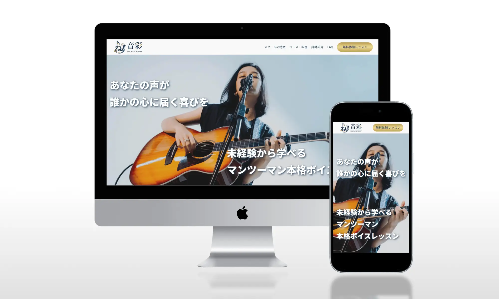
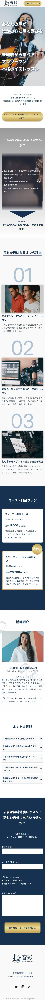

LP 架空ヴォーカルスクール[音彩]LP
- 概要
- 架空のヴォーカルスクールのLPをデザイン・コーディング実装しました。（※テキスト内容はAIを使用）
- 担当範囲
- デザイン / コーディング
- 製作期間
- 約28時間（デザイン～コーディング）
- 使用技術・ツール
- HTML / CSS(Sass) / JavaScript / Figma / VScode /SSGform(外部フォームサービス)
- ソースコード(GitHub)
- https://github.com/chisaki-dsgn/LP-VocalAcademy
- 実装のポイント
-
- 視線誘導とサイトのテンポ感を意識し、要素が画面に入ったタイミングで画像が左右からフェードインする動きをJavaScript（IntersectionObserver）で実装しました。
- お問い合わせフォームには外部サービスのSSGフォームを採用し、静的サイトでもフォームを使用して直接コンバージョンを狙えるように実装しました。
- ヘッダーを固定表示にしそこにCVボタンを常時表示させることで、LPを読みながら好きなタイミングで問い合わせフォームに移動できるようデザイン実装しました。
